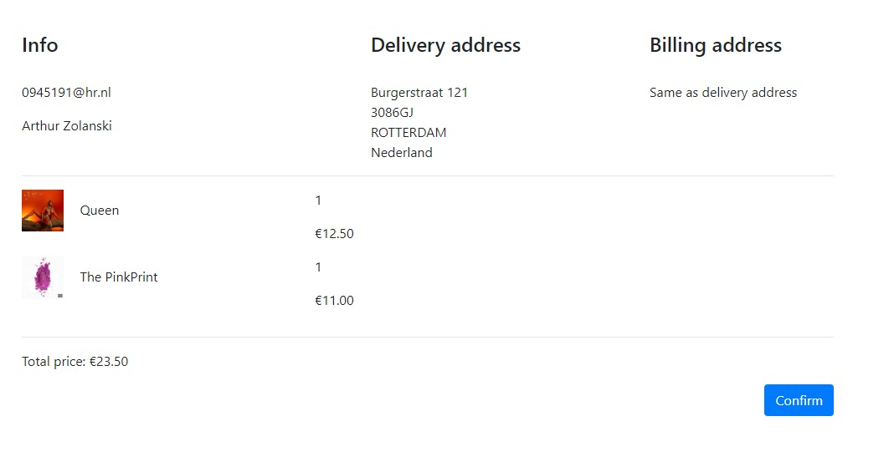

Project C: Webshop
In het tweede jaar zijn de projecten veranderd, in plaats van 4 projecten van een kwartaal hebben we nu twee grotere projecten van een half jaar, het eerste project dat we gedaan hebben is: Project C: Webshop. Voor Project C is het de bedoeling dat wij als groep een volledig werkende webshop maken, Na wat bespreken is de keuze gemaakt voor een online muziekwinkel. Graag wilden we een focus leggen op de mogelijkheid om gedetailleerd te filteren en zoeken.
Onze groep had wat moeite om op weg te komen, de eerste PO gesprekken waren onder niveau en we liepen ook achter. Hierom hebben wij toen als groep besloten om een frisse start met onze samenwerking en dus een inhaalslag te maken. Door deze frisse start werd het voor ons mogelijk om meer focus te leggen op het project, beter de taken te verdelen en iedereen te laten doen waar hij goed in is. Na een week hard te werken aan de site gingen wij van enkele losse pagina’s naar een volledig werkend en doorklikbaar design dat overal consistent was. Het was toen al mogelijk om vanaf de homepage naar een product te gaan en dit in de shopping cart te plaatsen, echter was een checkout functie nog niet toegevoegd. Onze PO gesprekken en presentaties werden ook naar een hoger niveau gebracht, we maakten vanaf nu elke week een overzicht van onze veranderingen en presenteerden deze. Er werd meer met de PO gecommuniceerd en hierdoor wisten wij beter hoe we verder konden werken.

Een screenshot van de pagina voor een product, met de cart en favourites knop, evenals stock en andere informatie aan de rechterkant.
Het eindresultaat voldoet ruim aan alle eisen die samen bepaald zijn: we hebben een shopping cart en checkout met de mogelijkheid om meerdere adressen toe te voegen. Er zijn filters voor artiesten, data en genres, evenals zoekfunctionaliteit. Ook zijn er statistieken en meerdere types accounts voor administrators en gebruikers. En is het mogelijk om als gast bestellingen te plaatsen. Ook is er de mogelijkheid om customizable homepages te maken, de beheerder kan elementen toevoegen met zelfgekozen albums om bijvoorbeeld per seizoen of bij nieuwe releases deze prominent op de voorpagina te plaatsen.
Een afbeelding van een stap in ons checkout systeem.
Terugblikkend op project C was het erg leuk om een groter project te maken, Het grootste verschil met de projecten van jaar 1 is dat er meer focus ligt op details, vorig jaar waren we blij als alles aan het eind functioneerde zonder al te veel bugs. Maar nu was het van belang dat wij ruim van tevoren al een webshop neergezet hadden die functioneerde. Kortgezegd: er moest meer “polish” komen op ons product. Wel zou ik bij een volgend project meer focus leggen op onze samenwerking en organisatie, het achterlopen van project C was niet nodig en kan volgende keer voorkomen worden.